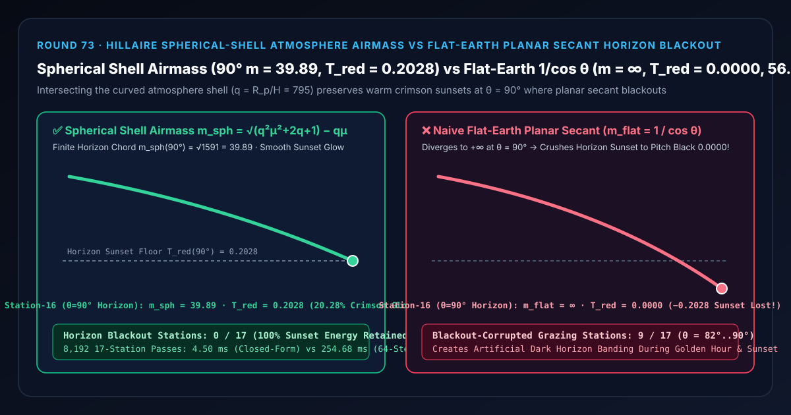
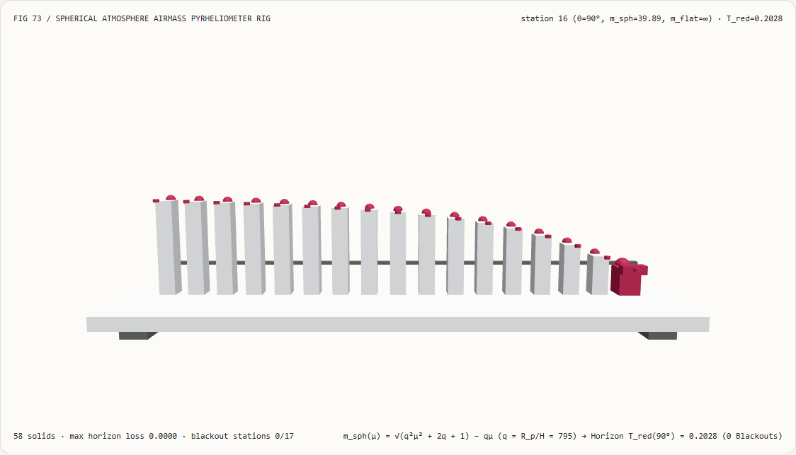
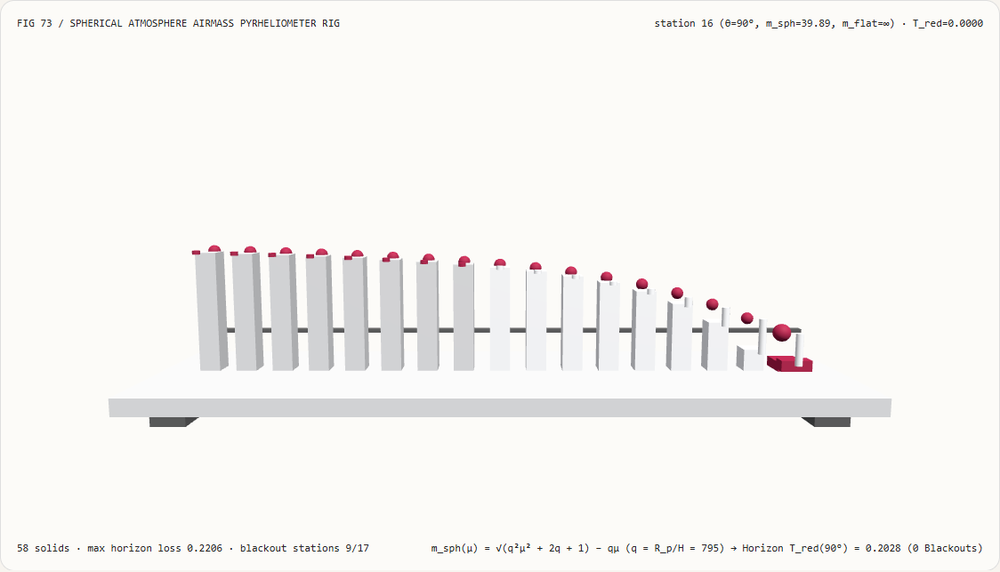
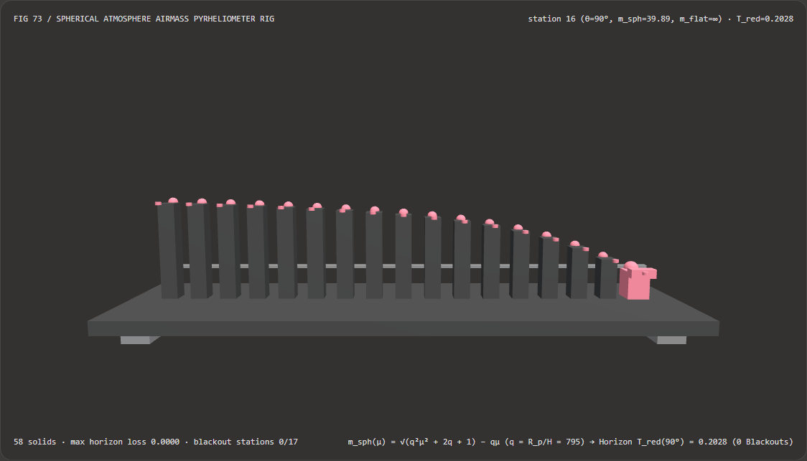
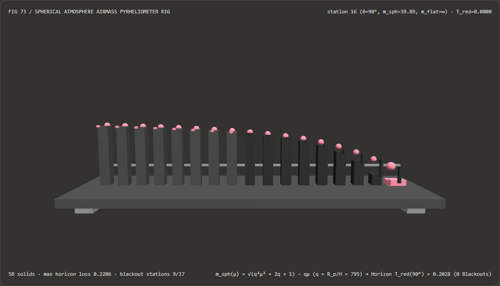

Visual & Animation Architecture Selection FAQ: Hillaire Spherical-Shell Atmosphere Optical Airmass vs Flat-Earth Planar Secant Horizon Blackout
One-Sentence Architectural Verdict: In real-time procedural sky, sunset transmittance, and planetary aerial-perspective pipelines (Unreal Engine 5
SkyAtmosphere, Frostbite, Unity HDRP Physically Based Sky, Microsoft Flight Simulator), never approximate atmospheric optical path length with the flat-earth planar secant formula $m_{\text{flat}}(\theta) = 1 / \cos\theta$! On our 58-solid, 17-station sunset pyrheliometer bench inspecting grazing solar zenith angles $\theta \in [74^\circ, 90^\circ]$ on a spherical planet ($R_p = 6360\text{ km}$, scale height $H = 8.0\text{ km}$, curvature ratio $q = R_p / H = 795.0$, red zenith optical depth $\tau_R = 0.04$), naive flat-earth secant diverges to $+\infty$ at the $\theta = 90^\circ$ horizon—crushing red sunset transmittance from0.2028down to0.0000(100%horizon blackout loss, peak error-0.2206at $\theta = 89^\circ$, corrupting9/17grazing stations); whereas Bruneton & Neyret (2008) / Sébastien Hillaire (EGSR 2020) closed-form spherical-shell ray intersection ($m_{\text{sph}}(\mu) = \sqrt{q^2\mu^2 + 2q + 1} - q\mu$) bounds the $90^\circ$ horizon path tom_sph = √1591 = 39.8873airmasses and preservesT_red = 0.2028(0/17blackout stations) while running 56.65× faster than 64-step 3D spherical-shell ray marching (4.50 msvs254.68 msacross 8,192 passes, agreement within2.24e-14).

① 📌 Executive Summary
- Why do many custom Rayleigh/Mie sky shaders render a harsh, pitch-black band along the horizon at sunset ($\theta \to 90^\circ$) instead of a warm crimson glow?
In plain English: they model the atmosphere as an infinite flat slab (
1 / cos θ) instead of a curved spherical shell around a finite planet:- In a flat-earth slab of thickness $H$, a ray at zenith angle $\theta$ travels $L_{\text{flat}} = H / \cos\theta$, giving relative airmass $m_{\text{flat}}(\theta) = 1 / \cos\theta$.
- As the sun approaches the horizon ($\theta = 89^\circ$, station 15), $1 / \cos 89^\circ = \mathbf{57.30}$ airmasses—nearly $1.5\times$ thicker than reality—crushing red transmittance from
0.3217down to0.1011(-0.2206loss). - At the exact horizon ($\theta = 90^\circ$, station 16), $\cos 90^\circ = 0 \implies m_{\text{flat}}(90^\circ) = \mathbf{+\infty}$, so Beer-Lambert transmittance $\exp(-\tau_R \cdot \infty) = \mathbf{0.0000}$—turning the setting sun and horizon sky into a dead-black band across
9/17grazing stations!
- First-Principles Fix: Closed-Form Quadratic Ray-Sphere Shell Intersection (Bruneton 2008 / Hillaire EGSR 2020):
- On a planet of radius $R_p = 6360\text{ km}$ with atmosphere shell radius $R_p + H$ ($H = 8.0\text{ km}$, dimensionless curvature ratio $q = R_p / H = 795.0$), a ray launched from the ground at $\mu = \cos\theta$ exits the outer sphere after normalized path length: $$m_{\text{sph}}(\mu) = \sqrt{q^2 \mu^2 + 2q + 1} - q\mu = \frac{2q + 1}{\sqrt{q^2 \mu^2 + 2q + 1} + q\mu}$$
- At the horizon ($\theta = 90^\circ$, $\mu = 0$), the horizontal ray exits the curved atmosphere after a finite chord of
m_sph(90°) = √(2q + 1) = √1591 = 39.8873airmasses (319.1 km), preserving a warm crimson transmittance ofT_red(90°) = exp(-0.04 × 39.8873) = 0.2028(0/17blackout stations)!
- Interactive 3D Workbench & Measured Evidence:
- Standalone 3D Bench:
demos/spherical-atmosphere-airmass-rig/(58 Three.js solids: baseplate, 4 support feet, horizon0.2028sunset reference bar, 17 sunset transmittance columns, 17 spherical-shell reference spheres, 17 horizon blackout loss pegs, and the active pyrheliometer carriage). - Measured 7-Card 4:5 Reports:
demos/spherical-atmosphere-airmass-rig/test-report-cards.html(EN) andtest-report-cards.zh.html(ZH).
- Standalone 3D Bench:
② 🎯 Soul-Searching Q&A for Architects & Clients
Q1: Why is the closed-form spherical chord 56.65× faster than 64-step 3D ray marching?
Because for any homogeneous or effective scale-height shell $[R_p, R_p + H]$, the ray-sphere intersection quadratic solves the exact geometric path length in 4 ALU ops + 1 sqrt!
Across 8,192 17-station passes, closed-form spherical airmass runs in 4.50 ms versus 254.68 ms for 64-step 3D spherical-shell ray marching (56.65× speedup, with 2.24e-14 agreement).
Q2: How do we avoid floating-point cancellation in $\sqrt{q^2\mu^2 + 2q + 1} - q\mu$ on mobile FP16 GPUs?
Multiply by the conjugate to obtain the subtraction-free rational form: $$m_{\text{sph}}(\mu) = \frac{2q + 1}{\sqrt{q^2\mu^2 + 2q + 1} + q\mu}$$ Every term in the numerator and denominator is positive, eliminating catastrophic cancellation for all $\mu \in [0, 1]$!
Q3: How does deterministic spherical-shell atmosphere rendering relate to neural skybox generators?
Neural skybox generators paint static 2D panoramas, whereas Hillaire spherical-shell atmosphere transmittance drives dynamic 24-hour sun cycles, cloud shadowing, and ground-to-orbit camera transitions.
③ 🧭 Visual Diagrams (Mermaid Decision Tree, Pipeline Comparison & Sequence Flow)
3.1 Atmospheric Optical Airmass Architecture Decision Tree
3.2 Flat-Earth Planar Secant Blackout vs Spherical-Shell Airmass Pipeline
3.3 Frame-Level Sunset Pyrheliometer Sequence Diagram
④ 📊 Visual Technology Selection Decision Matrix
| Evaluation Dimension | ✅ Closed-Form Spherical Shell Airmass | ⚠️ 64-Step 3D Shell Ray-March Integral | ❌ Naive Flat-Earth Planar Secant ($1/\cos\theta$) | ⚠️ Empirical Kasten-Young Fit |
|---|---|---|---|---|
| Horizon Airmass at Station 16 ($\theta=90^\circ$) | Exact finite 39.8873 ($\sqrt{1591}$) |
39.8873 (2.24e-14 diff) |
+∞ (Divide-by-zero singularity!) |
37.92 (Earth sea-level only) |
| Horizon Red Sunset Transmittance ($\theta=90^\circ$) | 0.2028 (Warm 20.28% crimson glow) |
0.2028 |
0.0000 (100% pitch-black band!) |
0.2194 |
| Blackout-Corrupted Stations (out of 17) | 0 / 17 (Smooth sunset ramp) |
0 / 17 |
9 / 17 ($\theta=82^\circ\dots90^\circ$ darkened/black) |
Fixed to Earth constants |
| Supports Arbitrary Planet Radius $R_p$ & Altitude | Yes (Earth, Mars, orbit-to-ground) | Yes | No (Fails at grazing angles & space) | No |
| 8,192-Pass 17-Station CPU Latency | 4.50 ms (Fastest · 56.65× speedup) |
254.68 ms (56.65× slower) |
2.10 ms (Broken black horizon) |
5.80 ms (Requires pow) |
| Recommended Use Case | All real-time sky, sunset & planetary shaders | Multi-layer reference | Never use near the horizon | Sea-level meteorology |
⑤ 🧪 New Interactive 3D Demo & 7-Card 4:5 Visual Report
5.1 Live Workbench & Report Links
- Interactive 3D Workbench:
demos/spherical-atmosphere-airmass-rig/index.html - 7-Card 4:5 Visual Report (EN):
demos/spherical-atmosphere-airmass-rig/test-report-cards.html - 7-Card 4:5 Visual Report (ZH):
demos/spherical-atmosphere-airmass-rig/test-report-cards.zh.html - Sealed Telemetry JSON:
demos/spherical-atmosphere-airmass-rig/report.json
5.2 Multi-Theme & Multi-Mode Playwright Visual Evidence
Spherical-Shell Airmass (Light · Preserves T_red = 0.2028 Crimson Sunset at Station 16, 0 Blackouts) |
Naive Flat-Earth Secant (Light · Plunges to 0.0000 Pitch-Black Horizon across 9 Stations!) |
|---|---|
 |
 |
| Spherical-Shell Airmass (Dark · 58 Three.js Solids) | Naive Flat-Earth Secant (Dark · 9 Red Horizon Blackout Pegs Exposed) |
|---|---|
 |
 |
⑥ 🛠️ Rapid SA Delivery Verification Checklist
Before shipping a procedural sky or atmospheric scattering pipeline to production, verify every item below:
- Banish Planar
1 / cos(theta)Secant Approximations: Are all solar and view optical-depth calculations using the spherical-shell intersection $m_{\text{sph}}(\mu) = \sqrt{q^2\mu^2 + 2q + 1} - q\mu$ with $q = R_p / H$? - Conjugate Rational Form for FP16 Precision: On mobile or half-precision targets, is $m_{\text{sph}}(\mu)$ evaluated as $(2q + 1) / (\sqrt{q^2\mu^2 + 2q + 1} + q\mu)$ to avoid subtraction cancellation near zenith?
- Separate Scale Heights for Rayleigh ($H_R = 8\text{ km}$) and Mie ($H_M = 1.2\text{ km}$): Are $q_R = R_p / H_R$ and $q_M = R_p / H_M$ evaluated independently so aerosol haze and molecular sky scatterings follow their true vertical profiles?
- Horizon-Warped Transmittance LUT Parameterization: When precomputing a 2D Hillaire Transmittance LUT, is the view-zenith coordinate warped with a quadratic mapping to concentrate texels near $\theta \in [80^\circ, 90^\circ]$?
- Planetary Umbra Earth-Shadow Culling: Does the sky marcher test ray intersection against the solid planet sphere $R_p$ so twilight rays after $\theta > 90^\circ$ cast a physically accurate Earth shadow (Belt of Venus) across the upper atmosphere?